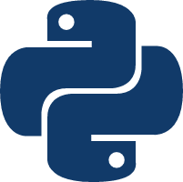

<!DOCTYPE html>
<html lang="en">

<head>
	<meta charset="UTF-8">
	<title>Python2</title>
	<link rel="stylesheet" href="../../css/normalize.css">
	<link rel="stylesheet" href="../../css/styles/agate.css">
	<link rel="stylesheet" href="../../css/dark.css">
	<script src="../../js/jquery-3.2.1-compressed.js"></script>
	<script src="../../js/highlight.pack.js"></script>
	<script src="../../js/index.min.js"></script>
</head>

<body>
	<aside id="sidebar">
		<section id="catalog">
			
			目录
		</section>
	</aside>
	<div id="showCatalog">
		
	</div>
	<article id="container">
		<hgroup>
			<h1 id="title">Python2</h1>
		</hgroup>
		<section>
			<h2>字符编码</h2>
			<p>
				<h3>编码类型</h3>
				python 默认字符串类型为 str，字符编码为 ascii，即<span class="different">X</span>（十六进制数）。
				<pre><code class="python">
strString = 'Hello world';
				</code></pre>
				为字符串前添加前缀 u 表示使用 unicode 类型，即<span class="different">\uXXXX</span>来表示。
				<pre><code class="python">
unicodeString = u'你好世界';
u'\u4f60\u597d\u4e16\u754c'
				</code></pre>
				可以将 unicode 转化为其他编码，比如 utf-8，即<span class="different">\xXX</span>来表示。
				<pre><code class="python">
unicodeString = u'你好世界';
unicodeString.decode('utf-8');
'\xe4\xbd\xa0\xe5\xa5\xbd\xe4\xb8\x96\xe7\x95\x8c'
				</code></pre>
				<h3>报错</h3>
				编写以下 python 代码并执行：
				<pre><code class="python">
#!/usr/bin/python
strString = '你好';
unicodeString = u'世界';
print strString + unicodeString;
				</code></pre>
				将会获得报错：
				<pre><code class="shell">
File "./hello-world.py", line 2
SyntaxError: Non-ASCII character '\xe4' in file ./hello-world.py on line 2, but no encoding declared; see
http://python.org/dev/peps/pep-0263/ for details
				</code></pre>
				存在两种报错：
				<ol>
					<li>将 python 编译为字节码时，默认为 ascii 编码，而 strString 是中文，因此报错。</li>
					<li>执行代码时，str 类型的字符串和 unicode 类型的字符串相加，默认将 str 类型的字符串转化为 unicode 类型，字符编码默认也是 ascii，因此报错。</li>
				</ol>
				解决方法：
				<pre><code class="python">
#!/usr/bin/python
# coding=utf-8
import sys;
reload(sys);
sys.setdefaultencoding('utf-8');

strString = '你好';
unicodeString = u'世界';
print strString + unicodeString;
				</code></pre>
				<h3>字符编码转换</h3>
				<pre><code class="python">
# -*- coding=utf-8 -*-
# 因为加了上面一行，所以 '你好世界' 直接就是 utf-8 编码的 str，否则就是 ascii 编码
unicodeString = u'你好世界';
utf8String = '你好世界';

# unicode 转 utf-8
unicodeString.encode('utf-8')

# utf-8 转 unicode
utf8String.decode('utf-8');
				</code></pre>
			</p>
		</section>
		<section>
			<h2>变量</h2>
			<p>
				<h3>动态强类型</h3>
				<ul>
					<li>python 是动态类型语言，允许变量类型覆盖</li>
					<li>javascript 中变量未声明就使用得到 undefined，python 中如此使用会报错 "NameError: name 'xxx' is not defined"</li>
				</ul>
				<h3>变量类型</h3>
				使用 type 方法来判断类型：
				<pre><code class="python">
type(1);
&lt;type 'int'&gt;
				</code></pre>
				<ul>
					<li>
						数字
						<ul>
							<li>int：整型</li>
							<li>long：长整型，用 l 或 L 在数字后标志</li>
							<li>float：浮点型</li>
							<li>complex：复数，用 j 表示虚数</li>
						</ul>
					</li>
					<li>
						字符串
						<ul>
							<li>str：默认</li>
							<li>unicode：用 u 在字符串前标志</li>
						</ul>
					</li>
					<li>列表：list，即数组</li>
					<li>元组：tuple，相当于枚举类型，是一个只读列表</li>
					<li>字典：dict，即对象 / json</li>
					<pre><code class="python">
intNumber = 1;
floatNumber = 1.0;
longNumber = 1l;
complexNumber = 1j;
strString = 'hello world';
unicodeString = u'你好';
list = [1, '2', [3]];
tuple = (1, '2', [3]);
dict = {'a': 1}
					</code></pre>
					注意，dict 的建如果不添加引号，则认为是变量，比如：
					<pre><code class="python">
a = 'something';
dict = {a: '1'};

# 等价于 javascript 中
const a = 'someting';
const dict = {[a]: '1'};

# 且 dict 无法通过 . 运算符取属性
dict.a
AttributeError: 'dict' object has no attribute 'a'
					</code></pre>
				</ul>
				<h3>字符串 / 列表 / 元组操作</h3>
				<ul>
					<li>string[start:end]：用于取出一部分，相当于 (string | array).slice(start, end)</li>
					<li>string[start:]：用于取出从索引到末尾，相当于 (string | array).slice(start)</li>
					<li>string1 + string2：用于连接，相当于 string1 + string2 或 array1.concat(array2)</li>
					<li>string * n：用于重复运算，相当于 string.repeat(n)</li>
					<li>字符串可以使用单引号，也可以使用双引号，用三个单引号或双引号表示模板字符串</li>
					<li>len(string)：计算长度，相当于 (string | array).length</li>
					<li>range(number)：用于生成 [0, 1, 2,...,number] 的列表</li>
				</ul>
				<pre><code class="python">
s = '''
hello
world
''';
				</code></pre>
				<h3>字符串方法</h3>
				<ul>
					<li>str(value)：将其他类型变量转化为字符串</li>
					<li>string1.startswith / endswidth(string2 [,start] [,end])：判断 string1 是否指定 string2 开始 / 结束</li>
					<li>string1.find | index(string2 [,start] [,end])：在 string1 中找到 string2 索引</li>
					<li>string.upper / lower()：将所有字母转化为小写 / 大写</li>
					<li>string.strip()：裁切两侧空格</li>
					<li>string1.split(string2)：裁切字符串，返回列表</li>
					<li>string1.replace(string2, string3)：将 string1 按照 string2 替换成 string3</li>
				</ul>
				<h3>列表方法</h3>
				<ul>
					<li>list.append(element)：向末尾追加新元素</li>
					<li>list.insert(index, element)：向索引位置插入元素</li>
					<li>list.pop()：删除最后一个元素</li>
					<li>del list[index] | list.remove(element)：删除指定元素</li>
					<li>list1 + list2 | list1.extend(list2)：连接列表</li>
					<li>list.index(element)：找到元素索引</li>
					<li>list.reverse()：翻转元素</li>
					<li>list.sort([cmp])：列表排序</li>
					<li>string.join(list)：列表连接为字符串，相当于 javascript 的 list.join(string)</li>
					<li>[li.key for li in list]：相当于 javascript 的 list.map(li => li.key)</li>
				</ul>
				<h3>字典方法</h3>
				<ul>
					<li>dict.keys()：获得键所组成的列表，比如 {'a': 1}.keys() 获得 ['a']</li>
					<li>dict.values()：获得值所组成的列表，比如 {'a': 1}.values() 获得 [1]</li>
					<li>
						dict.items()：获得键和值组成的元组的列表，比如 {'a': 1}.items() 将获得 [('a', 1)]</li>
					<pre><code class="python">
dict = {
	'a': 1
};
for key, value in dict.items():
	print key + ':' + str(value);
						</code></pre>
					<li>dict.get(key, defaultValue) | dict[key]：获得值</li>
					<li>dict1.update(dict2)：类似于 javascript 的 assign 方法</li>
					<li>del dict[key] | dict.pop(key)：删除指定键值对</li>
					<li>dict.has_key(key) | key in dict：判断是否 dict 是否有 key</li>
				</ul>
				<div class="tip">
					注意，使用 dict[key] 获得值时，如果 key 不存在，则会报错，但如果使用 dict.get(key) 获得值，如果 key 不存在，则会返回 None。
				</div>
				<h3>分号和缩进</h3>
				<ul>
					<li>与 javascript 一样，python 不需要添加分号（也可以添加）。</li>
					<li>python 使用缩进来表示层级，而不用大括号</li>
				</ul>
			</p>
		</section>
		<section>
			<h2>函数</h2>
			<p>
				<h3>pass</h3>
				函数是一个可调用对象，函数体不能为空，如果不执行任何操作，则用 pass 代替。
				<pre><code class="python">
def function_name():
  pass;
				</code></pre>
				<h3>必须参数与可选参数</h3>
				当参数带有默认值时，表示为可选参数，否则为必须参数。
				<pre><code class="python">
# requiredParam：必须参数
# optionalParam：可选参数
def function_name(requiredParam, optionalParam = defaultValue):
	# 语句 或 pass
	# return 表达式;
				</code></pre>
				<h3>具名参数和不具名参数</h3>
				调用函数时，如果直接传递参数，则参数按位置匹配，也可以直接指定参数名传递参数。
				<pre><code class="python">
def function_name(a, b, c):
	pass;

function_name(c = 1, b = 2, a = 1);
				</code></pre>
				<h3>*args 和 **kwargs</h3>
				在函数体内，*args 表示不具名参数列表，**kwargs 表示具名参数列表。
				<pre><code class="python">
def function_name(*args, **kwargs):
	print args;
	print kwargs;

function_name(1, 2, 3, a = 1, b = 2, c = 3);
(1, 2, 3)
{'a': 1, 'c': 3, 'b': 2}
				</code></pre>
				* 和 ** 相当于对象展开符（javascript），此时取得的 args 和 kwargs 为元组和字典，可以使用 * 和 ** 传递给其他函数（如果不加这两个符号，则被当做传递一个普通的元组和字典）。
				<pre><code class="python">
def other_function_name(*args, **kwargs):
	pass;

def function_name(*args, **kwargs):
  other_function_name(*args, **kwargs);
				</code></pre>
				<div class="tip">
					args 和 kwargs 只是一种约定俗成，可以使用其他变量名。
				</div>
				<h3>匿名函数</h3>
				<pre><code class="python">
lambda_function = lambda param1, param2, ...: param1 + param2 + ...;
# 相当于 javascript 的 (param1, param2, ...) => param1 + param2 + ...;
				</code></pre>
				<h3>作用域</h3>
				由于 python 不需要声明变量，所以在函数内进行修改全局变量时，会变成创建局部变量。
				<pre><code class="python">
# 函数内可以读取到全局变量
g = 1;
def printG():
	print g;

printG(); # => 1
# 但无法直接写全局变量，以下操作会被认为是在创建局部变量 g
def writeG():
	g = 2;

writeG();
print g; # => 1

###########

# 如果要写全局变量，则需要使用 global 关键字声明
def writeG():
	global g;
	g = 2;

writeG();
print g; # => 2
				</code></pre>
			</p>
		</section>
		<section>
			<h2>类</h2>
			<p>
				<h3>声明与使用类</h3>
				<pre><code class="python">
# 创建类
class ClassName:
	staticProperty = initValue;
	__privateProperty = value; # 私有方法，只能通过 self.__privateProperty 访问
	def __init__(self, params):
		self.instanceProperty = value;
		# 初始化时调用

	def method(self, params):
		# 方法
	
	def __privateMethod(self):
	  # 私有方法，只能通过 self.__privateMethod 访问

	def __del__(self):
		# 实例对象呗销毁时调用
		

# 创建实例
instance = ClassName(params);
# 获得类所有方法和属性
dir(instance)
# 判断是否有属性
hasattr(instance, 'instanceProperty');
# 获取属性
instance.instanceProperty;
getattr(instance, 'instanceProperty');
# 设置属性
instance.instanceProperty = newValue;
setattr(instance, 'instanceProperty');
# 删除属性
del instance.instanceProperty;
delattr(instance, 'instanceProperty');
				</code></pre>
				<h3>继承</h3>
				python 与其他面向对象语言不同的是，允许同时继承多个类。
				<pre><code class="python">
class Parent1:
	def __init__(self):
		print '我是 Parent1';
	def say(self):
	  print 'Parent1 说话';
		
class Parent2(object):
	def __init__(self):
		print '我是 Parent2';

class Children(Parent1, Parent2):
	def __init__(self):
	  # 调用父类构造函数
		Parent1.__init__(self); # 写法一（self 参数是必须的，否则会报错）
		super(Children, self).__init__(); # 写法二（只能应用于有父类的类，如果应用到 Parent1 将报错）
		print '我是 Children';

	def say(self):
		# 调用父类方法
		super(Children, self).say();

instance = Children();
				</code></pre>
				<ul>
					<li>staticProperty 即静态成员，通过 ClassName.staticProperty 或 实例对象.staticProperty 来获取</li>
					<li>__init__ 即构造函数</li>
					<li>self 即指向实例的指针，类比 javascript 的 this 指针</li>
					<li>创建实例的时候不需要 new 关键字</li>
					<li>实例属性不能通过 instance['instanceProperty'] 来获取</li>
				</ul>
			</p>
		</section>
		<section>
			<h2>模块</h2>
			<p>
				<h3>模块寻找路径</h3>
				当想要导入其他模块时，python 解析器会按照以下路径进行查找：
				<ol>
					<li>当前文件所在目录</li>
					<li>按照 shell 变量 PYTHONPATH 进行查找</li>
					<li>python 解析器所在目录</li>
				</ol>
				在 python 内，使用 os.sys.path 来查看寻找路径：
				<pre><code class="python">
import os;
print os.sys.path;
# => ['', ...]
				</code></pre>
				可以在执行 python 时指定 PYTHONPATH，多个路径使用冒号隔开：
				<pre><code class="python">
# demo.py
import os;
print os.sys.path;

PYTHONPATH=/demo1:/demo2:/demo3 ./demo.py
['', '/demo1', '/demo2', '/demo3', ...]
				</code></pre>
				<h3>import</h3>
				如果要引入其他模块，则可以使用 from...import 或 import 关键字，该关键字会沿着 os.sys.path 进行查找：
				<pre><code class="python">
# 使用方法：
# 一、直接导入包
import file_name;

# 二、导入包内的方法
from file_name import function_name;

# 三、导入后进行重命名
from file_name import function_name as other_function_name;

# example：
# a_file.py
def a_function():
	pass;

# b_file.py
import a_file;
a_file.a_function();

# 或

from a_file import a_function;
a_function();
				</code></pre>
				除此之外，还可以使用相对路径来导入模块，相对路径相对的是<span class="different">执行 python 命令时所在的路径</span>：
				<ul>
					<li>from .xxx import xxx：当前路径</li>
					<li>from ..xxx import xxx：上一级路径</li>
					<li>from ...xxx import xxx：上两级路径</li>
					<li>...</li>
				</ul>
				<h3>私有变量</h3>
				默认情况，一个 python 文件内的全局变量会被自动 export ，比如：
				<pre><code class="python">
# a_file.py
a = 1;

# b.py
from a_file import a;
				</code></pre>
				如果不想被 export ，则变量名前需要添加一个下划线 "_" 。
				<pre><code class="python">
# a-file.py
_a = 1;
				</code></pre>
			</p>
		</section>
		<section>
			<h2>包</h2>
			<p>
				当一个目录下存在 __init__.py 文件时，就标志这个目录为一个包。
				<h3>模块引用</h3>
				这个包内可以放置一些 python 文件作为包的模块，然后通过“包名.文件名”来引用，比如存在以下目录结构。
				<div id="catalogFrame">
					package_name<br>
					<div>
						__init__.py<br>
						file_name.py<br>
					</div>
				</div>
				<pre><code class="python">
# file_name.py
def function_name():
	pass

# 使用包
from package_name.file_name import function_name
				</code></pre>
				<h3>执行一遍</h3>
				当包内的模块首次被使用时，__init__.py 文件会被先执行一遍，所以可以在 __init__.py 文件内进行初始化。
				<pre><code class="python">
if __name__ == '__main__':
	# 执行执行 __init__.py
else:
	# 引用模块
				</code></pre>
			</p>
		</section>
		<section>
			<h2>运算符</h2>
			<p>
				与一般运算符一样，存在以下不同：
				<ul>
					<li>使用 and, or, not 表示 &&, ||, !</li>
					<li>使用 in, not in 表示列表（数组）的 includes 方法</li>
					<li>== 仅用来判断值是否相等，不会判断地址空间是否为同一个</li>
					<li>is 运算符用来判断地址空间是否为同一个</li>
					<li>python 没有自增和自减运算符</li>
				</ul>
				<pre><code class="python">
a = [1, 2, 3];
b = [1, 2, 3];
a == b; # => True
a is b; # => False

# from: http://www.runoob.com/python/python-operators.html
# 正常来说，每次新建对象，都是一个新的地址空间
a = 1.0;
b = 1.0;
a is b; # => False

# 但 python 为了提高内存效率，对于数值范围在 [-5, 256] 的整型，会进行复用
a = 256;
b = 256;
a is b; # => True
a = 257
b = 257
a is b; # => False
				</code></pre>
			</p>
		</section>
		<section>
			<h2>流程控制</h2>
			<p>
				<ul>
					<li>python 没有 switch</li>
				</ul>
				<h3>判断</h3>
				<pre><code class="python">
if (条件):
	# 语句 或 pass
else:
	# 语句 或 pass
elif (条件):
	# 语句 或 pass
# 空一行
				</code></pre>
				<ul>
					<li>条件外层的括号可以省略</li>
					<li>若条件内为空，则需要使用 pass，不能为空</li>
				</ul>
				<h3>循环</h3>
				<pre><code class="python">
while (条件):
	# 语句 或 continue 或 break
# 空一行

# for...in 的条件不能使用括号
for key in string | list | tuple | dict:
	# 语句 或 continue 或 break
else:
# 语句 或 continue 或 break
# 空一行

# for...i 语句，range 用于生成 [0, 1, 2, ...]
for i in range(length):
	# 语句
				</code></pre>
			</p>
		</section>
		<section>
			<h2>魔术方法</h2>
			<p>
				<h3>__str__</h3>
				当我们没有定义该方法时输出（print）一个对象时，得到的是指针地址。
				<pre><code class="python">
class A:
	pass;

print A();
&lt;__main__.A instance at 0x1081cd680&gt;
				</code></pre>
				当我们定义了该方法后，输出的是该方法的返回值（返回值必是字符串，否则报错）。
				<pre><code class="python">
class A:
	def __str__(self):
		return 'Hello world';
		
print A();
Hello world
				</code></pre>
			</p>
		</section>
		<section>
			<h2>装饰器</h2>
			<p>
				装饰器为一种语法糖，实质上是一个函数或类，将被装饰器装饰的函数作为参数传入。当装饰器是函数时，其他执行顺序如下：
				<pre><code class="python">
def decorator(foo):
	def wrapper(*args):
		print 'I am wrapper in decorator'
		return foo(*args)
	return wrapper

@decorator
def foo():
  pass

foo('hello world')
				</code></pre>
				<span class="different">foo()</span>将 foo 作为参数传递给 decorator 并执行，decorator 执行后获得 wrapper 函数，将 'hello world'
				作为参数传递给 wrapper 并执行，执行得到的返回值便是 foo 的返回值，等价于以下代码：
				<pre><code class="python">
def decorator(foo):
	def wrapper(*args):
		print 'I am wrapper in decorator'
		return foo(*args)
	return wrapper

def foo():
  pass

decorator(foo)('hello world')
				</code></pre>
				由于装饰器本质是函数，所以可以使用装饰器前（@xxx）执行函数并返回一个函数，将返回的函数作为装饰器，实现更灵活的操作。
				<pre><code class="python">
def use_decorator(option):
	def decorator(foo):
		def wrapper(*args):
			print 'I am wrapper in decorator in use_decorator'
			return foo(*args);
		return wrapper
	return decorator

@use_decorator('before hello world')
def foo():
  pass

foo('hello world')
				</code></pre>

			</p>
		</section>
		<section>
			<h2>math</h2>
			<p>
				使用 math 包来进行运算：
				<pre><code class="python">
import math;
n = math.floor(1.5); # => 1.0

# 有一些函数直接内置，比如 abs，不需要引用 math 就可以直接使用。
n = abs(-1); # => 1
				</code></pre>
				<ul>
					<li>abs(number)：取绝对值</li>
					<li>math.ceil(number)：上取整</li>
					<li>math.floor(number)：下取整</li>
					<li>round(number)：四舍五入取整</li>
					<li>math.pow(number) / pow(number)：取幂</li>
					<li>math.sqrt(number)：开方</li>
					<li>min(x1, x2, ...) | min(list | string | tuple)：取最小值</li>
					<li>max(x1, x2, ...) | max(list | string | tuple)：取最大值</li>
					<li>math.sin / cos / tan / ... ：三角函数</li>
				</ul>
			</p>
		</section>
		<section>
			<h2>random</h2>
			<p>
				生成随机数。
				<pre><code class="python">
import random;
random.random();
				</code></pre>
				<ul>
					<li>random.seed([number]])：设置随机种子</li>
					<li>random.random()：生成 [0, 1) 的浮点数</li>
					<li>random.choice(list)：取出 list 中随机一个元素</li>
					<li>random.shuffle(list)：将列表乱序</li>
					<li>random.randrange(start=0, stop)：生成 [0, stop) 的整数</li>
				</ul>
			</p>
		</section>
		<section>
			<h2>sys</h2>
			<p>
				<h3>sys.argv</h3>
			</p>
		</section>
		<section>
			<h2>requests</h2>
			<p>
				<h3>下载</h3>
				requests 不是 python 自带的库，需要先进行下载。
				<pre><code class="shell">
$ pip install requests
				</code></pre>
				<h3>发起请求</h3>
				<pre><code class="python">
import requests;

requests.get('https://www.baidu.com/', params={'wd': 'python'});
requests.post('https://www.baidu.com/', data={'wd': 'python'})
...
				</code></pre>
				<h3>响应内容</h3>
				通过 text 属性来获得响应主体内容。
				<pre><code class="python">
import requests;

r = requests.get('https://www.baidu.com/', params={'wd': 'python'});
r.text;
				</code></pre>
				requests 会对响应内容的编码进行猜测，也可以手动指定字符编码：
				<pre><code class="python">
r.encoding = 'utf-8';
				</code></pre>
			</p>
		</section>
		<section class="refer">
			<h2>参考文献</h2>
			<p>
				<div>[1] RUNOOB Python 基础教程 <a
						href="http://www.runoob.com/python/python-tutorial.html">http://www.runoob.com/python/python-tutorial.html</a>
				</div>
				<div>[2] 理解 python 装饰器这篇文章就够了 <a
						href="https://foofish.net/python-decorator.html">https://foofish.net/python-decorator.html</a></div>
				<div>[3] Python Tips *args and **kwargs <a
						href="http://book.pythontips.com/en/latest/args_and_kwargs.html">http://book.pythontips.com/en/latest/args_and_kwargs.html</a>
				</div>
				<div>[4] requests Quick Start <a
						href="https://2.python-requests.org//zh_CN/latest/user/quickstart.html">https://2.python-requests.org//zh_CN/latest/user/quickstart.html</a>
				</div>
				<div>[5] Github debugtools <a
						href="https://github.com/edoburu/django-debugtools">https://github.com/edoburu/django-debugtools</a></div>
			</p>
		</section>
	</article>
</body>

</html>